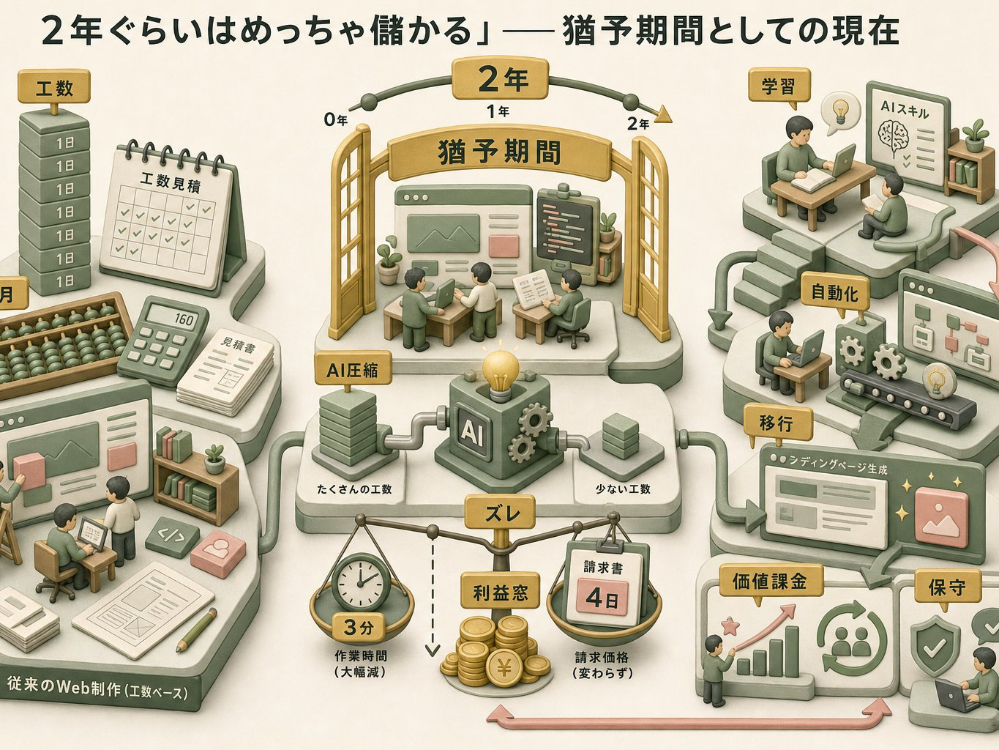
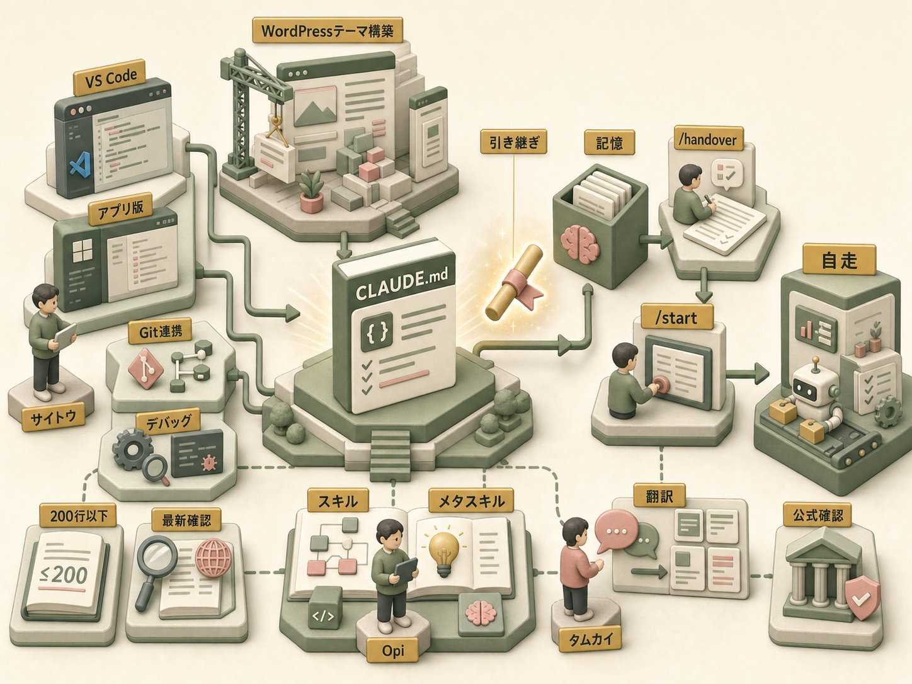
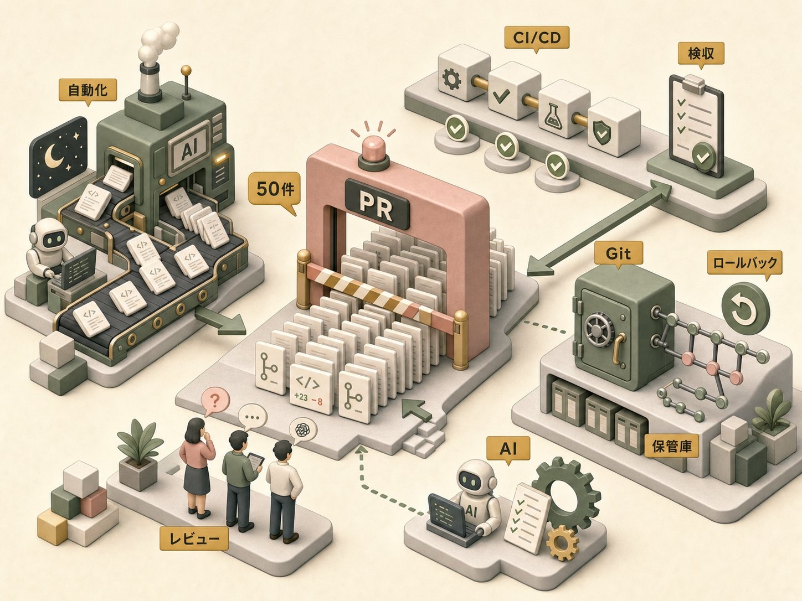
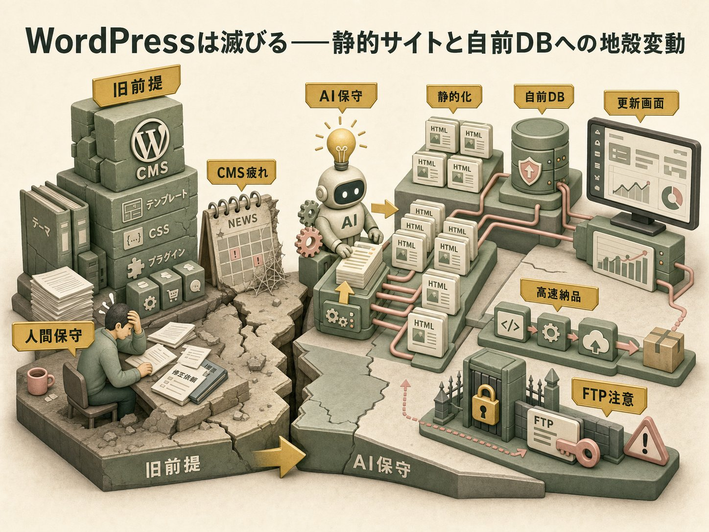
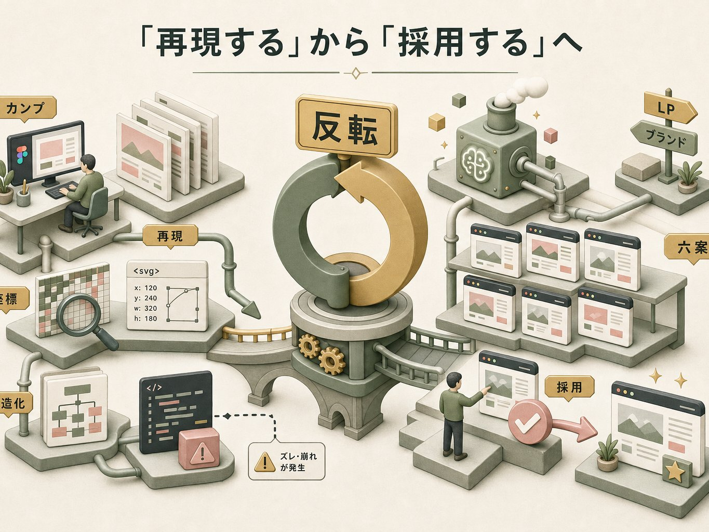
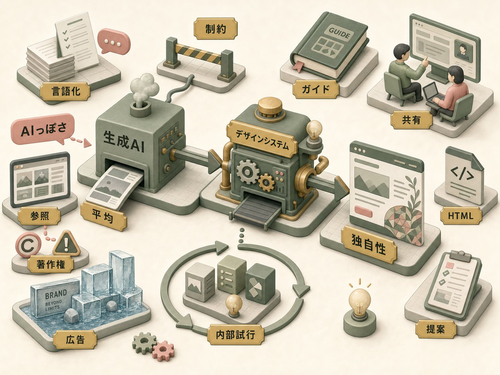
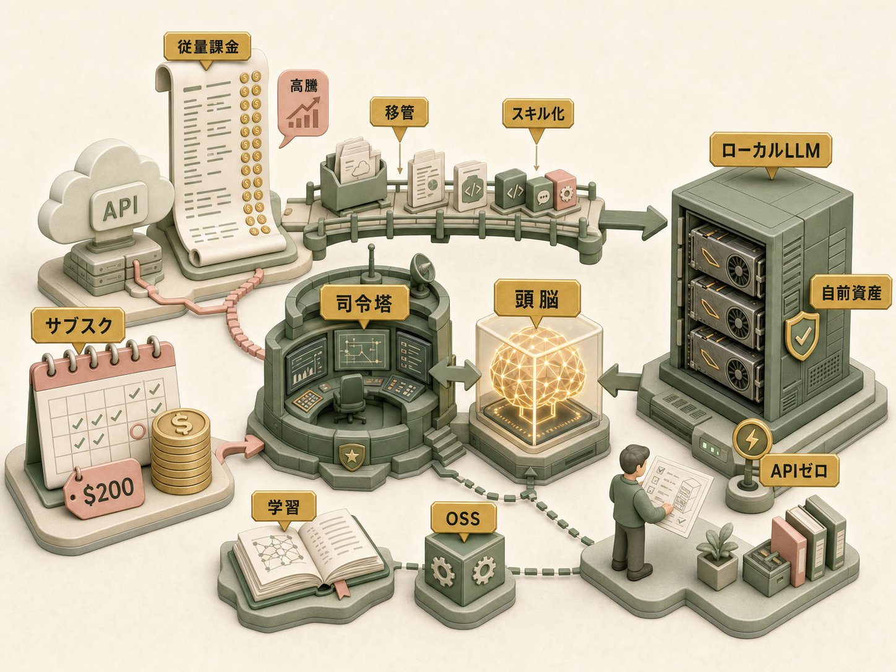
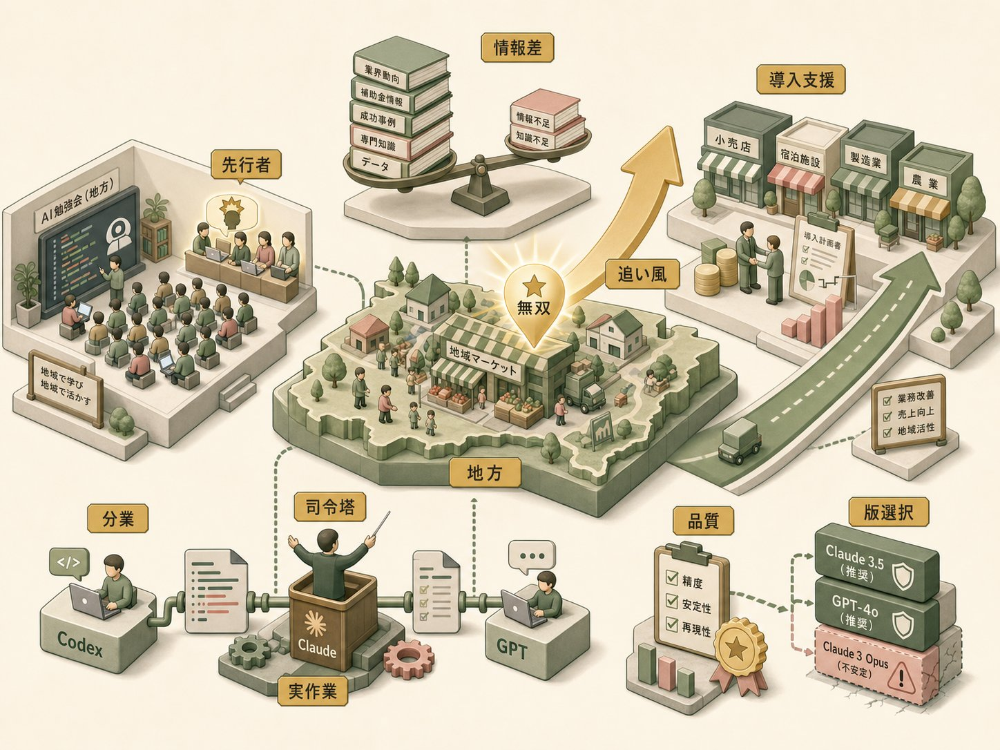

2026年6月18日、翌週に迫った浜松での現地開催を前に、Zoomで一つの打ち合わせが行われた。参加したのは四人。AI活用の講座を主導するOpiと、そのパートナーであるタムカイ。そして浜松側から、ウェブ制作会社・株式会社ルーパスを率い、地域経済メディア「浜松経済新聞」の編集長も務める大久保さんと、同社でプログラマーとして働くサイトウさんである。
きっかけは、浜松の交流会だった。Opiと旧知の浅井さんから「珍しく浜松で飲む会があるんだけど、行かない」と誘われ、二、三十人が焼き鳥の皮を囲む席で、大久保さんと岸本さんという二人の経営者が「AIに興味がある」と漏らした。そこから今回の話は転がり始めた。来週、Opiとタムカイは浜松へ赴き、経営者向けに「AIの仕組みとできること」を説明する。今日の打ち合わせは、その前哨戦——とりわけ、現場で実際にClaudeを触り始めているサイトウさんから、いま何ができて何に詰まっているのかを聞き出す場だった。
この記録は、四人の会話を意味のまとまりで再構成したものである。ウェブ制作という、AIの影響をもっとも直接に受けつつある職能の現場で、何が起きようとしているのか。そして、その変化に呑まれるのではなく乗りこなすために、いま何を仕込んでおくべきなのか。技術的な勘所を中心に、注釈で補いながら追っていきたい。

打ち合わせは、大久保さんからのシンプルな問いから実質的に始まった。いまAIで、ウェブ制作はどこまでできるのか。Opiの答えは、楽観でも警告でもない、奇妙に醒めた現状認識だった。
Opi
「2年ぐらいはめっちゃ儲かると思います。というのも、今まで一生懸命みんなで組んでたのが、あっという間に作れて、単価は同じでもらえるっていう話になるので。僕の周りのWeb制作の会社は、ずっと先まではわからないけど、短期的には超儲け時って言って、みんなウハウハしてるような状況です」
作業時間は劇的に縮むのに、請求は従来の工数ベースのまま据え置ける。この「ズレ」こそが、いまウェブ制作会社に開いている短期的な利益の窓だという。Opiはこれを後段で、より露骨な言葉で言い換えている。3分で終わる作業を「4日かかりますね」と言って4日分の工数をもらう——倫理的な是非はさておき、市場価格がまだ旧来の人月感覚で動いているあいだは、これが現実的な過渡期の振る舞いになる。
ただしOpiの力点は、その儲けを懐に入れることではなく、浮いた時間を何に投資するかにあった。
Opi
「空いた時間でガンガンAIのスキルを伸ばしてって、どう自動化するかとか、もう下手するとアプリ変えちゃった方が早いよってなったりするんですよ。なので、もう自社のランディングページ生成アプリを作ろうみたいなことに、多分すぐ行くと思います」
現在は、いわば猶予期間である。価格と作業量の乖離がもたらす一時的な余剰を、次の構造への移行資金と学習時間に変換できるかどうか。この章でOpiが繰り返し示唆していたのは、儲け時の裏側で同時に進めるべき「移行」の存在だった。
工数ベースの請求と「価値対価」への移行
ウェブ制作業界の伝統的な見積もりは、作業にかかる時間（人月・人日）を単価に掛ける「工数ベース（タイム・アンド・マテリアル）」が主流である。これは作業時間と成果物の価値がおおむね比例するという前提に立っている。
AIによって作業時間が数十分の一に圧縮されると、この前提が崩れる。サイトウさんが「30キロあるんだけど、でも実際は工数としてはお金取らなきゃいけない、どうやってお金取るんだろうな」と漏らした戸惑いは、まさにこの計測単位の崩壊を指している。代替案として議論されるのが、成果（コンバージョン率など）に連動させる「成果ベース価格」や、納品後の継続運用に対する「保守サブスクリプション」といった、時間ではなく価値に課金するモデルである。本対話では結論には至らず、当面は工数ベースを維持しつつ移行を探る、という現実解が共有された。

会話の中心は、現場の当事者であるサイトウさんへと移る。彼はClaude Codeを導入してまだ二ヶ月足らず。普段はVS CodeかWindowsアプリ版を使い、CLIを直接叩くことは少ない。WordPressのテーマ制作などをAIに流しながら、最終的には「自走させたい」と考えているが、デバッグまわりやGit連携の環境づくりが追いつかず、まだ単発の修正依頼にとどまっている、という率直な現状を語った。
これに対してOpiが示した処方箋は明快だった。自動化の最初の一歩は、機能の自動生成ではなく、セッションをまたいで記憶を引き継ぐ仕組みを作ることだ、と。
Opi
「VS Code使っててもClaudeのセッションみたいなのがあるわけじゃないですか。で、その長い作業になっていくと、もうセッションごとにあいつ忘れちゃうじゃないですか。なので、スキルを作って、このセッションのまとめと、次にやるべきタスクをまとめさせるっていうスキルを作る。で、その次、新しいセッションを開くときに、一番新しいセッションを読んでくれなはれ、という」
Opi自身は、この引き継ぎ機構を /handover（セッション終了時に要約と次タスクを書き出す）と /start（次回起動時に最新の引き継ぎを読み込む）という二つのスキルとして、プロジェクトごとに用意しているという。これが効くのは、毎回ゼロから要件定義をやり直す手間から解放されるからだ。
Opi
「前からの続きの時にスタートコマンドをやると、今までの話がちゃんと理解して新しいセッションが始まるみたいな。毎回、今回の要件定義とかを徹底してやらなきゃいけないっていうところから、まず解放されます」
セッションとコンテキストウィンドウ——なぜ「引き継ぎ」が必要か
大規模言語モデル（LLM）は、一度のやりとり（セッション）で扱える情報量に上限がある。これを「コンテキストウィンドウ」と呼ぶ。会話が長くなると古い情報は文脈の外に押し出され、モデルは「忘れる」。Opiの「あいつ忘れちゃう」という表現は、この技術的制約を的確に言い当てている。
引き継ぎスキルの本質は、揮発するセッション内記憶を、ファイルという永続的な外部記憶へ書き出し、次セッションの冒頭で読み戻すことにある。これはAIエージェント設計でいう「メモリの外部化」であり、人間が会議の終わりに議事録を取り、次の会議の冒頭でそれを読み返す行為とまったく同じ構造をしている。自動化というと派手な機能生成を想像しがちだが、Opiが「第一歩」に据えたのが地味な記憶の引き継ぎだった点は示唆的である。継続性こそが自律化の土台になる。
なお、サイトウさんが現状の作業環境について「普段はVS CodeかWindowsアプリ版で、CLIを直接叩くことはほとんどない」と述べた点にOpiは補足を加えている。ちょっとした修正ならWeb版・アプリ版のClaudeで十分だが、本格的に「実装させよう」と思うとVS Codeベースになる、と。さらに最近、Claudeのデスクトップ版とコード版（Claude Code）が相互につながるようになり、「取り扱いがちょっと前は分離してたんですけど、共用するようになってて、設定がややこしくなってます」とも。だからこそ環境設定は、推測ではなく「今日現在のAnthropic公式」を確認すべきだ、という。
CLI・IDE統合・デスクトップ版——ツール形態の選択と統合の混乱
Claude Codeのようなコーディング支援AIには、複数の利用形態がある。CLI（コマンドラインインターフェース、黒い画面にコマンドを打つ形式）、VS CodeなどのIDE（統合開発環境）への組み込み、そしてデスクトップアプリやWeb版だ。サイトウさんが「CLIを直接書くことはしない」と言うように、多くの実務者はIDE統合かGUI（グラフィカルな画面）を入り口にする。
Opiの「ちょっとした修正はアプリ版でいいが、実装させるならVS Codeベース」という使い分けは、作業の性質に応じた形態選択の勘どころである。単発の質問やコード片の修正はGUIが手軽だが、ファイルを横断して継続的に開発させるにはIDE統合の文脈把握力が要る。一方で「デスクトップ版とコード版が共用するようになって設定がややこしくなった」という観察は、ツールが急速に進化・統合する過渡期ならではの摩擦を示す。製品仕様が週単位で変わる領域では、過去の知識がすぐ陳腐化する。Opiが「必ず今日現在の公式を確認」と繰り返すのは、知識カットオフの議論と同じ構えだ——AI活用の作法そのものが、AIに「いつの話か」を問い続けることに帰着していく。
サイトウさんは「スキルとか、なんとなくはわかってきてはいるんですけど、力関係というか、関係性とかもあんまりちゃんとわかってない」と、概念の整理が追いついていないことを認める。ここでOpiは、スキル運用の三つの勘所を立て続けに説明した。
ひとつめは CLAUDE.md の置き場所と長さ。プロジェクト構成のベストプラクティスは頻繁に変わるため、Opiは「2026年6月最新の、ベストのディレクトリ構成を教えて」とClaude自身に尋ねる「魔法のプロンプト」を勧める。ここで決定的に重要なのが、「2026年6月現在において」という時点指定だという。
Opi
「AIのモデルっていうのは知識カットオフっていうのがあって、要はリリースされたときまでの知識は持ってないんですよ。なので、普通に一番いい方法を教えてっていうと、半年前とか下手したら一年前の情報を考え始めちゃう。とにかくCLAUDE.mdに、今日の日付をゲットデートしろっていうのは非常に効きます」
知識カットオフと日付の明示——なぜ「今日」を教えると精度が上がるのか
LLMには「知識カットオフ（knowledge cutoff）」がある。モデルは学習に使われたデータの収集時点までの知識しか持たず、それ以降の出来事・仕様変更・新製品を知らない。週単位で大型アップデートが続く現在のAI領域では、この時間的盲点が致命的になりうる。
対策が、プロンプトに現在日付を明示的に与えることだ。Opiの言う「ゲットデート（get date、システムの現在日時を取得させる指示）」を CLAUDE.md に書いておくと、モデルは「いまは2026年6月だ」という時間的座標を持ったうえで推論する。これによって、半年前のディレクトリ構成や古いAPI仕様を「最新」と誤認する事故が減る。本対話のなかでOpiが「マンズ（commandsディレクトリ。スラッシュコマンドの旧来の置き場所）は今も聞くけど、実際の実装としてはほとんど使われてない」と例示したように、ベストプラクティスそのものが数ヶ月で陳腐化する世界では、AIに「いつの話か」を握らせることが品質の前提条件になる。
ふたつめは、CLAUDE.md を200行以下に保つこと。あれもこれもと指示を書き込みたくなるが、長すぎる設定ファイルはセッション起動時に貴重なコンテキストを食いつぶし、性能を落とす。「無駄なお金を払うことになる」とOpiは言う。
みっつめが、スキルの作り方だ。Opiが「必ず使った方がいい」と強調したのは、Anthropic公式のスキルクリエイター——「スキルを作るスキル」、すなわちメタスキルである。
Opi
「アンソロピック公式のスキルっていうのは、ティア構成っていうのを取ってます。だんだん情報が深くなってくる構成になってるんですね。フロントマターって言うんですけど、要は見出しだけを最初にセッションが立ち上がるときにロードして、使うときに本文読むみたいな使い方になってる」
スキルの三層（プログレッシブ・ディスクロージャー）構造
Anthropicのスキル（Agent Skills）は、情報を段階的に開示する設計を採っている。第一層は「フロントマター」と呼ばれるメタデータ（スキル名と一行の説明）で、これだけがセッション起動時に全スキル分ロードされる。第二層が本体の手順書（SKILL.md）で、そのスキルが実際に呼び出されたときに初めて読み込まれる。第三層は、本体から参照される個別のリソースファイル（詳細手順・スクリプトなど）で、必要になった瞬間にだけ開かれる。
この「プログレッシブ・ディスクロージャー（段階的開示）」が効くのは、コンテキストウィンドウという有限資源を節約できるからだ。Opiは「知らない間に20個ぐらいスキルを自分で作ってたんですけど、ロードの時にそれ全部読んで、1/3ぐらいいきなりコンテキスト使ってる」という失敗を挙げた。全スキルの本文を起動時に読み込めば、肝心の作業を始める前に文脈が埋まってしまう。見出しだけ先に持ち、中身は使うときに開く——図書館で全蔵書を暗記するのではなく、背表紙の索引だけ覚えて必要な本を取りに行く構造だと考えればよい。だからこそ、この構造を自力で正しく組むより、公式のスキルクリエイターに作らせるのが堅い、というのがOpiの結論である。
ここで、それまで技術的な濁流のような説明を聞いていたタムカイが口を開く。彼の役割が、この会話の構造を言い当てていた。
タムカイ
「僕も僕のAIの師匠がOpiさんなんですけれど、この調子でザーって全部話されて、はいっつってやるのが一番近道だったっていうのはあるんですが、でも僕はどちらかというと元々の出自がデザイナーなので、すごくハイエンドなやつを分かりやすくするためにここにいるっていうところもあって。今あの頃聞いたから理解できるけど、これだけ聞いても絶対わかんねえわって思いながらやってるので、多分この辺だなって後でまとめてお伝えできるようにします」
高密度の技術情報を浴びせるOpiと、それを「翻訳」して着地させるタムカイ。この二人の分業そのものが、AI導入支援という事業の縮図になっている。

サイトウさんは、Gitは触ってきたがGitHub自体はほとんど使ったことがなく、最近になって鍵付きリポジトリを作り始めたところだと打ち明ける。「今後はGitHubを通してやりたい」という彼に、Opiは少し意外な見立てを返した。Gitは覚えておくべきだが、その役割は変質する、と。
Opi
「自動化が進むと、AIで自動で回してると一晩で50個ぐらいPRが上がっちゃったりするんで、もはやそれを読んで判断するのも微妙みたいな」
サイトウさんは即座に応じた。「それこそボトルネックですよね」。この相槌が、変化の本質を突いている。コードを書く工程が自動化されると、ボトルネックは生産からレビュー（検収）へと移る。一晩で50個のプルリクエストが生成される世界では、人間が一つひとつ読んで承認する従来の運用が破綻する。
Opi
「単純に物量になってきてるので、gitは覚えておいた方がいいとは思いますが、今後gitがメインになる気がしないっていう。ソース管理としてはあるかもしれないけど、戻れるロールバック、そういう感じで。そのgitをフル活用して、いろんな人の情報を集めてまとめるみたいな作業はなくなっていくのかな」
バージョン管理とロールバック（任意の過去状態へ戻す）の安全装置としての価値は残る。だが「多人数の貢献を統合する協働の場」というGitHub本来の機能は、共同編集者がAIに置き換わるにつれ、開発の中心から外れていく——というのがOpiの予測だった。
ちなみにOpi自身は、この引き継ぎシステムのなかにCI/CDのチェックまで組み込んでいる。ローカルの変更がGitHubからどれだけ進んでいるか、コミットし忘れている箇所はないかを /handover の段階で教えてくれるようにしているという。
プルリクエスト（PR）とレビューのボトルネック
プルリクエスト（PR）は、ある開発者が作った変更（ブランチ）を、本体（メインブランチ）に取り込んでほしいと依頼する仕組みである。本体を管理する人がその差分をレビューし、問題なければマージ（統合）する。複数人が並行して開発する現代のソフトウェア開発で、品質を担保する関所として機能してきた。
AIエージェントが自律的にコードを書くようになると、この関所が詰まる。Opiの「一晩で50個のPR」は誇張ではなく、生成側のスループットがレビュー側の処理能力を桁違いに上回る事態を指す。製造業でいえば、生産ラインを高速化した結果、検品工程に仕掛品が山積みになる状態だ。ここから導かれる問いは深い——人間が読みきれない量のコードを、誰が・何が検証するのか。AIによるレビューの自動化、テストによる機械的検証への依存度上昇、あるいは「そもそも人間が読まない前提のコード」という発想の転換まで、この一言は射程に含んでいる。

ここでOpiは、この日もっとも踏み込んだ予測を口にする。
Opi
「おそらくWordPressは滅びます。実はCSSもやや危なくて。つまり、絵を描くんだったらHTMLでよくねっていう世界線に今なりつつあります。CSSにしてもWordPressにしても、人間がメンテナンスする前提で考えてるじゃないですか。なので、AIが書くんだったら、別にええやんっていう世界にちょっとなってます」
論理はこうだ。WordPressやCSSといった既存の仕組みは、いずれも「人間が保守しやすいように」設計されている。テンプレートを分け、スタイルを共通化し、CMSで非エンジニアでも更新できるようにする——これらはすべて、人間の認知の限界を補うための工夫だった。だが、書き手と保守者がAIになるなら、その前提自体が消える。
Opiは具体例を畳みかける。そもそもクライアントにWordPressを導入する典型的な理由は、「ニュースページを自分たちで更新できるように」だった。だが現実には「一ヶ月に1回ぐらい更新されてれば優秀な会社」で、「わざわざCMS入れてるのに」ほとんど使われていない。さらに、役員の交代でプロフィールを差し替えるような、CMS化されず直接テーマに埋め込まれた箇所の修正に半日取られる——ウェブ制作会社の「あるある」だ。これがAIなら、HTMLを全ページ書き直しても1〜2分で終わる。
サイトウさんも、ちょうど直近でWordPressのテーマをClaudeに作らせていた経験から、深く頷く。
サイトウさん
「お客さんのサーバーだったんで、FTPしかもらってなかったんですよ。なんですけど、もうClaudeにFTPの情報をあげて、これでもうデプロイしてって言ったら、ババッともうやってくれちゃうんで。だからちょっとしたスキルか何か書いて、ここ直してって言ったら、もう直してくれちゃう世界なんだろうな」
認証情報をAIに渡すという運用——利便性とセキュリティの綱引き
サイトウさんが「FTPの情報をあげて、デプロイしてって言ったらババッとやってくれる」と語った運用は、AI活用の劇的な利便性を示すと同時に、見過ごせないセキュリティ上の論点を含んでいる。FTP（ファイル転送プロトコル）の認証情報は、サーバー上のファイルを書き換えられる権限そのものだ。それをAIエージェントに渡すということは、本番環境への書き込み権限をAIに委ねることに等しい。
この運用が現実に回っているのは、それだけ作業が速く片付くからだ。だが裏を返せば、AIが誤った操作をすれば本番サイトを壊しうるし、認証情報がどこにどう保持されるか、ログに残るか、第三者に漏れないかといった管理が問われる。とりわけ顧客から預かったサーバーの情報であれば、その取り扱い責任は制作会社側にある。本対話の冒頭近くでOpiが「今日の会話、録画してるんで、文字起こしお送りするんで安心して聞いてください」と断ったのも、情報の取り扱いへの配慮の一端だろう。利便性が極端に高まるほど、「何をAIに渡してよいか」の線引き——監査ログの確保、権限の最小化、機密情報の分離——が、効率化とセットで設計されるべき課題として浮上する。会議でも未整備の宿題として残された論点である。
タムカイは、この変化を性急に煽らない冷静さを見せた。自身もブログをWordPressで運用していたが、結局メンテナンスをサボってしまう——それは個人でも会社でも起こる。だから静的サイトのほうが軽くて楽だという方向は理解しつつ、こう釘を刺す。
タムカイ
「今日今すぐってなると、そのお仕事の内容が大きく変わるので、いきなりってことは多分ないと思うんですが、ゆくゆく世の中的にそっちの方が軽くて楽だし、なんならお客さんがAI使い始めると自分でも更新できるようになっていくっていう世界は、大屋さん、ちょっとすぐ未来に行っちゃうので、まだ早いと思いますよみたいな話をするんですが、いや、じわじわそっちに行ってるよな」
Opiが描いた着地点はこうだ。来年ぐらいには、「データベースを組んで、お客さんが更新用の画面も作って、ダッシュボードも作って、ついでにGoogleアナリティクスも全部入れときました」という納品が、実装上は二、三日で終わる。だが、それを「3週間ください」と告げて受注するのが、近々のビジネスモデルになる——第一章の「猶予期間」の議論が、ここで具体的な制作フローと接続する。
WordPress・CMS・静的サイト+自前DBという三つの世代
WordPressは、世界のウェブサイトの相当数を支えてきたCMS（コンテンツ管理システム）である。その価値は、HTMLを直接書けない人でも管理画面からニュースやブログを更新できる点にあった。フロントエンド（見た目）とバックエンド（データ管理）が分離していた時代、フロントエンド寄りのエンジニアがデータベース的な機能を扱う窓口としても重宝された。
「WordPressは滅びる」というOpiの主張は、この前提が二重に崩れることを指す。第一に、保守の容易さという設計目的が、保守者がAIになれば不要になる。第二に、「自分でデータベースを作ればよくね」——慣れれば数時間でDBを組み、Vercelやcloudflareといったホスティング環境へのデプロイまで自動化できるなら、CMSという中間層を挟む必然性が薄れる。
ただし「滅びる」は明日の話ではない。タムカイが慎重に補足したとおり、既存サイトの保守契約が現に存在し、移行には顧客側の業務変更を伴う。技術的な可能性（できる）と、商業的・組織的な移行（やる）のあいだには時間差がある。この章で交わされたのは、その時間差をどう読むかという、技術と経営の両にらみの議論だった。
静的サイトとデプロイ自動化——Vercel・Cloudflareという新しい土台
Opiが描く移行先は、「静的サイト＋自前データベース＋簡易な更新UI」という構成だ。静的サイトとは、あらかじめ生成したHTMLをそのまま配信する方式で、WordPressのようにアクセスのたびにサーバー側でページを動的に組み立てる必要がない。表示が速く、サーバー負荷も低く、セキュリティ上の攻撃面も小さい。
この方式を支えるのが、VercelやCloudflareといったホスティング／デプロイ基盤である。デプロイとは、作ったサイトを実際にインターネット上へ公開・反映する工程を指す。Opiが「その辺のやつも全部自動化できちゃう」と言うように、これらの基盤はコードの変更を検知して自動でビルド・公開する仕組みを備えており、AIエージェントに環境情報を渡せば、テーマ作成からデプロイまで一気通貫で回せる。
ここで第三章のGitの議論が静かに接続する。VercelやCloudflareは通常、Gitリポジトリと連携して「コードが更新されたら自動デプロイ」という流れを組む。Gitが「開発の協働の場」としての主役を降りても、こうした自動化パイプラインの起点として裏方で機能し続ける——「ソース管理とロールバックとしての価値は残る」というOpiの見立ては、この文脈でも裏づけられる。WordPressという一枚岩の仕組みが、静的サイト・自前DB・デプロイ基盤という複数の部品の組み合わせへと分解されていく。その組み立てと自動化を担うのがAIだ、というのがこの移行の絵姿である。

サイトウさんが最後まで食い下がったのが、デザインの再現性だった。彼の会社にはデザイナーがいて、デザインカンプ（完成見本）を起こす。それをAIにコーディングさせると、どうしても正確に再現してくれない。
サイトウさん
「この間Fableが出た時にFableで試そうと思って試せなかったのがちょっと痛かったんですけど、今Opus使っててもやっぱりOpusでもそんなに再現力高くないなっていうのがちょっとあって。この再現度が高くなったら、もう丸ごとコーディングなんて人間がやらずに全部AIに任せばいいじゃんって話になるんですけど」
100%でなくていい、「ちょこちょこっといじるぐらいでなんとかならないか」というのが彼の切実な要望だった。Opiの回答は二段構えである。
まず、サイトの種類で分けて考える。ランディングページ（LP）は、コンバージョンを最大化する構成がすでにKPIとして定石化しており、デザインで凝る必然性は薄れている。一方、ブランドサイトは別の論理で動く。そしてデザイン再現という技術課題そのものについては、プロンプトの工夫だけでは解けない、と断じた。
Opi
「プロンプトだけだとね、解決しないです。分析エージェントみたいなのを作って。AIで出力したカンプをイラストレーターに起こす作業を、最初にカンプでピクセルデータを取らせて、ウィンドウに対してどのピクセルサイズでどのエレメントが来てるのかっていうのを分析で取って、それを構造化ファイル、MDでもYAMLでもいいんですけど、1回吐き出させて、エレメントのサイズと位置を決めてしまうみたいな、そういうパイプラインを作ってしまえば、無茶なデザインでない限り、全然再現できると思います」
サイトウさんも「SVGにすると座標が全部入ってるんで、再現性は高いんじゃないか」という情報を補い、技術的な勘所が噛み合う。タムカイは、自分のパワポに会社ロゴをSVGで入れた実例を添えた。
ピクセル解析・構造化・SVG座標——「再現」を工程に分解する
既存デザインをAIにコーディングさせる難しさは、AIが画像を「だいたいこんな雰囲気」と意味的に解釈してしまい、ピクセル単位の正確な座標やサイズを保持しないことにある。Opusのような高性能モデルでも、画像から直接コードを書かせると再現度が頭打ちになるのはこのためだ。
Opiの提案は、これを一つのプロンプトで解こうとせず、パイプライン（複数工程の連鎖）に分解する発想である。(1) カンプ画像を解析し、各要素の位置・サイズをピクセル値として抽出する「分析エージェント」を立てる。(2) その結果をMarkdownやYAMLといった構造化ファイルに書き出し、レイアウト情報を明示的なデータにする。(3) そのデータをもとに、Illustratorのスクリプト機能（JSX）などで自動再構成する。「絵を見て描き直す」のではなく「設計図を読んで組み立てる」工程に置き換えるわけだ。
サイトウさんの挙げたSVG（スケーラブル・ベクター・グラフィックス）も同じ原理に立つ。SVGはすべての要素の座標を数値として内包する形式なので、AIにとって「解釈の余地」が少なく、再現性が高い。要するに、AIに曖昧な絵を渡すほど精度は落ち、明示的な数値・構造を渡すほど精度は上がる。再現問題は、モデルの賢さの問題というより、AIに何を入力するかという設計の問題なのだ。
ここでタムカイが、より根本的な視点を持ち込む。問題は「どう再現するか」ではなく、制作プロセスそのものの向きが反転する、というのだ。
タムカイ
「普段のウェブ制作のワークフローが大きく変わるだろうなと思うんですね。最初にまずフィグマなり、僕の時代だとフォトショップであったりイラストレーターで作って、イメージを固めないとクライアントのオッケーが取れないので、それをお見せして、持って帰ってきてコーディングをするので、これってどうやって再現するんだっけって話になりがちなんですけれど、多分そこのプロセスが変わって、まずもうHTMLで三案が作れる時代になってくると、これを再現するではなくて、これを採用するに変わっていくんだろうな」
カンプを起こし、それを後工程で「再現」する——この直線的なプロセスが、最初からHTMLで複数案を生成し、そのなかから「採用」する形へと反転する。
タムカイ
「もうできているものをどう直すかに変わっていくので、さっき大屋さんが言った『4日かかります』を20分で終わらせて、次撮る時のためのプロセスを作っていくっていうのが、多分この1、2年ぐらいやっといた方がいいところだな」
サイトウさんはこれに完全に同意する。「デザインありきで先に出すんじゃなくて、AIのレイヤーのやりやすいようにやらせる」。Opiも「最初からもうHTMLで六案ぐらい出してどれにしますっていうことになる」と引き取った。「再現」という後ろ向きの作業が、「採用」という前向きの選択へ。デザインプロセスの矢印そのものが向きを変える。
「再現」から「採用」へ——ワークフローのベクトル反転
従来のウェブ制作は、デザインカンプを「正」とし、それを忠実にコードへ写し取る工程として組まれていた。カンプが上流、コーディングが下流という一方通行である。クライアント合意もカンプの段階で取るため、後工程は「合意済みの絵を再現する」という制約のもとに置かれる。サイトウさんが再現精度に苦しんでいたのは、この旧来のベクトルにAIを当てはめようとしていたからだ。
タムカイの指摘は、AIを使うなら工程の向き自体を変えるべきだ、というものだ。HTMLで動く複数案を即座に生成できるなら、「絵を作って→合意して→再現する」ではなく、「複数案を作って→見て→採用して→直す」という流れになる。合意の対象が、静的なカンプから、すでに動く実物（HTML）へと移る。タムカイが別の箇所で語った「内部で1回ぐるっと回してHTMLにしたものをお客さんに見せると、それはもうご提案したものになっている」という運用は、まさにこれだ。カンプを見せると「これができるんでしょ」と齟齬が生まれるが、実物を見せれば認識のズレが起きない。
これは単なる効率化ではなく、創造のプロセスにおける「決定」の位置づけの変化である。あらかじめ一つの正解を描いてから実装するのではなく、複数の実装をまず並べ、そこから選び取る。AIの生成コストが限界まで下がったとき、「考えてから作る」より「作ってから選ぶ」ほうが速い局面が生まれる。タムカイが「AIを使うなら今までのやり方より、AIを使うからこそできるやり方を作る方向に変わる」と語ったのは、この転換の核心を突いている。

複数案を生成する話は、避けられない問題に行き着く。AIに作らせると「AIっぽく」なる。サイトウさんが「ChatGPTに使わせると、ChatGPTっぽくなっちゃう」と漏らすと、Opiはその原理を端的に説明した。
Opi
「AIっていうのは平均的な答えを、多くの人がだいたいこんな感じで作ってるっていうふうに作ってしまうので。なので、そこにどう違う角度を入れるか」
そしてOpiは、「あんまりやっちゃいけないんですけど」と前置きしつつ、一つの実用的な回避策を明かす。特定のウェブサイトをAIに読ませ、その特徴を「デザインガイド」として抽出させる。そのガイドに従って生成させれば、少なくとも没個性的な「AIっぽさ」からは脱せる。ただし著作権には注意が必要だと釘も刺した。
ここで実際に、Opiとタムカイが進めているプロジェクトのランディングページが画面共有で示される。タムカイがその制作手順を解説した。
タムカイ
「これもChatGPTのイメージ2で書いているので、いわゆる広告とかで見るAIっぽい感じの絵からはちょっとだけオリジナリティがあるように。この絵を元にデザインシステムを結構作るっていうのを最近はやっていて。さっきの絵をベースにこっちを持ってきて、これをもう1回読ませてコーディングをさせる」
吹き出しはこのパターン、アシュレ（あしらい＝装飾要素）はこのパターン、というように、デザインシステムをまずMarkdownで言語化し、それをAIに解釈させる。タムカイはこの「内部で1回ぐるっと回す」運用の利点を、人間だけの制作との対比で語った。
タムカイ
「さっきの絵の段階をお客様に見せてしまうと、これができるんでしょになって齟齬が生まれてしまうことがあるんですが、これを内部で1回ぐるっと回してHTMLにしたものをお客さんに見せると、それはもうご提案したものになっている。今までの人間だけでやろうとすると、なんでこんなことを内部でやって、ダメだったらどうするのっていうのが結構なくなる」
人間が手で複数案を試作するのは、失敗したときのコストが高く、無駄に見える。だがAIなら、その「無駄な試行」を内部で安く回せる。Opiは別のAI仲間が作ったというフルAI生成の広告ビジュアルも見せ、「撮影しようと思うと、もう死ぬんですよ。後ろも、水しぶきも、氷の感じとかを全部作っていかなきゃいけない」と、撮影者としての実感を込めて語った。ブランドサイトのビジュアルについては「もうそんなに心配していない」水準に達している、と。
生成AIの「平均への回帰」とデザインガイドによる差異化
生成AIが「AIっぽい」出力をするのは、その学習原理に根ざしている。モデルは膨大なデータから「最もありそうな」パターンを学ぶため、出力は統計的な平均へ引き寄せられる。Opiの「平均的な答えを作ってしまう」は、この性質の的確な要約だ。多くの人が似た作り方をするものほど、AIはそれを「正解」として再生産する。結果、誰が作っても似たような没個性的なアウトプットになる。
デザインガイドの抽出は、この平均回帰に「制約」を加えて逃れる手法である。特定の参照元からスタイルの特徴を言語化し、生成時の指針として与えることで、出力分布を平均から特定方向へずらす。タムカイがChatGPTのイメージ2（画像生成機能）で起こした絵から「デザインシステム」を作り、それを再度読ませてコーディングするのも同じ原理だ——平均的な生成に、自分たちのスタイルという偏りを注入している。
ただしOpiが「あんまりやっちゃいけない」「著作権の問題もある」と二度釘を刺した点は重要だ。他者のサイトをそのまま参照元にすれば、表現の盗用に近づく。差異化の技術は、同時に模倣の技術でもある。AIによるスタイル抽出が容易になるほど、「参照」と「剽窃」の境界をどこに引くかという問いが現場に突きつけられる。この注釈が技術解説でありながら倫理的な問いに開かれてしまうのは、生成AIの差異化という営み自体が、その緊張を内包しているからだ。

会話の後半、議論は技術論からコスト構造へと移る。サイトウさんが「24時間フル稼働させて、今のうちにさせとかないと」と口にしたとき、Opiはその「今のうち」という言葉に強く反応した。
Opi
「APIの料金がどんどんこれから高騰していくことは見えているので。僕らとしては、サブスクで安く使えているうちに勉強し倒して、ローカルのLLMにスキルを全部移管し、オープンソースモデルの無料のやつにいかに早く変換するかっていうのが、今年から来年みんなやってることですね」
現在、月100〜200ドル程度の定額で使い放題に近い環境が手に入る。だがこれは永続しない。Opiは自分のAnthropic利用量を従量課金換算すると「月に1200万ぐらい使ってる計算」になると明かし、「200ドルで1200万分使ってすまん、みたいな感じ」と笑った。エンタープライズ企業はすでにその実費を払い始めている。小さな会社こそ、安価なうちに学習を済ませ、ローカル環境へ移行しておかないと「死んじゃう」。
Opi
「ここに来てマシンがすごく大事になってきていて。物理的な環境ですね。300万ぐらいかけて、その分APIコストはゼロみたいなモデルにしていかないと、AIメインでやるところはしんどい」
さらにOpiは、現実的な折衷案も示した。Claude Codeを「外側（司令塔）」として使いつつ、「中身の頭脳のところ」にオープンソースモデルを据える、という構成だ。
Opi
「Claude Codeってエージェントの作り方とか、自動化の仕方が上手だったりする仕組みがあるので、中身の頭脳のところはオープンソースのモデルにするっていうパターンも最近は増えています」
API従量課金・サブスク・ローカルLLM——コストの三つの地平
現在の生成AI利用には、大きく二つの課金形態がある。一つは使った分だけ払う「API従量課金」、もう一つは月額固定の「サブスクリプション」だ。Opiの「200ドルで1200万分」という言い方は、サブスクで使い放題に近い体験ができる現状が、従量課金に換算すると桁違いに割安だという「歪み」を指している。プロバイダ各社が市場拡大のために原価割れに近い価格で提供している可能性が高く、この蜜月は構造的に持続しない。
ここで浮上するのが「ローカルLLM」への移管である。オープンソースのモデルをVRAMの大きいGPUを積んだ自前マシンで動かせば、初期投資（Opiの言う300万円規模のマシン）はかかるが、推論ごとの追加コストはほぼゼロになる。クラウドの従量課金から、自前資産への切り替えだ。Opiが「司令塔はClaude Code、頭脳はオープンソースモデル」という折衷を挙げたのは、Claude Codeのエージェント設計の優秀さは活かしつつ、最もコストのかかる推論部分だけを安価なローカルモデルに逃がす設計である。
この章の含意は、AI活用の競争力が「どのモデルを使うか」から「どこで・いくらで動かすか」というインフラ戦略へ移りつつある、ということだ。サブスクの安さに最適化したスキルやワークフローを、いまのうちに、移植可能な資産（スキル化された手順）として蓄えておく。Opiが第二章で「スキル化」を繰り返し勧めたことが、ここで伏線として回収される——スキルとして外部化された手順は、モデルが変わっても移管できる資産になるからだ。

サイトウさんが「地方なので、なかなか」と移行の難しさをこぼしたとき、Opiはそれを逆向きに捉え返した。
Opi
「地方だからこそ、今めっちゃ稼げるよねっていう。地方でAIどんどん導入してやってるところは、情報も少ないですし、やってるところが少ないっていうのもあるので、今結構無双できるみたいな。東京だとみんながガンガンやってますけど、僕は今、那覇に住んでるんですけど、那覇周りで聞いてる感じで言うと、ガツンガツンAIやってる人ほとんどいない」
サイトウさんも、地元で開かれたAI開発の勉強会の様子を共有する。30人ほどの参加者のうち、多くがGitHub Copilotを使っており、Claudeを本格的に触っている人は「2、3割、十人もいなかった」。Opiは「ほとんどの人はClaude（デスクトップ版）かCopilotレベル」と引き取り、地方における先行者優位の存在を裏づけた。情報の非対称性と実践者の希少性が、そのまま事業機会になる——これが、浜松という土地でAI導入支援を展開する構想の経済的な根拠である。
会話の終盤、Opiは現場で効く実務的な情報をいくつか投げ込んだ。なかでも印象的だったのが、モデルのバージョン選択にまつわる注意だった。
Opi
「重要な情報。Claude 4.8はバグってるんで、4.7か4.6に落とした方がいいです。特に日本語環境のバグがすごい多くて、突然メンヘラポエムを書き始めたりするので。ハルシネーションがすごいです」
サイトウさんは「急に英語になったり、急に変な失敗したり、確かにします」と実感を返す。Opiはさらに、ウェブ制作の界隈で広まっている運用も共有した。
Opi
「Claudeを司令塔にしてCodex、GPTのCodexを使った方がクオリティが上がりやすいです」
最新が常に最良とは限らない。バージョンを一つ落とす、複数のAIを役割分担させる——こうした現場の肌感覚に基づく判断こそ、情報の少ない地方では希少価値を持つ。
「司令塔」と「実作業」の分業——マルチエージェント・オーケストレーション
「Claudeを司令塔にして、実作業はGPTのCodexにやらせる」というOpiの運用は、複数のAIを役割分担させる「オーケストレーション（複数エージェントの統御）」の一例である。サイトウさんも「指揮をClaudeにさせて、実作業はCodex」という形で聞いたことがあると応じている。
この分業が効くのは、AIごとに得意分野が異なるからだ。あるモデルはタスクの分解・計画立案・全体の統御に長け、別のモデルは個別のコード生成の精度が高い。人間の開発チームで、設計を統括するリードと、実装を担うメンバーが役割分担するのと同じ構図である。一つの万能モデルにすべてを担わせるより、各工程に最適なモデルを充てるほうが、総体としての品質が上がりやすい。
この発想は、第五章で論じたデザイン再現の「パイプライン化」とも通底している。一つのプロンプト・一つのモデルで解こうとせず、工程を分解し、それぞれに適した手段を割り当てる。AI活用の習熟とは、単一の強力なモデルを使いこなすことから、複数の能力をどう組み合わせ・指揮するかという「編成」の設計へと移りつつある。司令塔を立てるという発想自体が、AIを道具としてではなく、統御すべきチームとして扱う段階に入ったことを告げている。
地方市場の情報非対称性と「最新＝最良ではない」という現場知
経済学でいう「情報の非対称性」は、通常は取引における不利を生む厄介ものとして語られる。だがOpiの「地方だからこそ無双できる」という見立ては、これを供給側の機会として読み替えている。実践者が少なく情報が行き渡っていない市場では、わずかでも先行して知見を持つ者が、相対的に大きな優位を得られる。東京のように実践者が飽和した市場では埋もれる知識が、浜松では希少資源になる。
同時にこの章は、AI活用における「現場知」の価値を浮かび上がらせる。「Claude 4.8よりも4.7か4.6」「司令塔はClaude、実作業はCodex」といった判断は、公式ドキュメントには書かれていない。実際に大量に使い込んだ者だけが体得する、経験的な勘どころである。最新バージョンが常に最良とは限らず、特定言語環境での挙動の癖や、複数モデルの組み合わせの妙は、手を動かした量に比例して蓄積される。情報非対称性が機会になるのは、こうした「使ってみないとわからない」知が、外から簡単には模倣できないからだ。地方でのAI導入支援という事業は、技術そのものを売るのではなく、この体得された現場知を翻訳して届けることに本質がある——本対話でタムカイが担っていた「翻訳者」の役割が、事業モデルそのものと重なる。
この一時間の打ち合わせは、表面的にはウェブ制作の技術相談だった。だがその底を流れていたのは、職能そのものの組み替えをめぐる思考である。
Opiが「2年ぐらいはめっちゃ儲かる」と言ったとき、それは安住の宣言ではなかった。価格と作業量の乖離が開く一時的な窓を、次の構造への移行資金に変えられるか——「猶予期間」という補助線が、その後のすべての話題を貫いていた。引き継ぎスキルとCLAUDE.mdの設計（第二章）も、PRというボトルネックの予感（第三章）も、WordPressの終焉と静的サイトへの地殻変動（第四章）も、そしてサブスクの蜜月が終わる前にローカルLLMへスキルを移管せよという宿題（第七章）も、すべては「いまのうちに何を仕込むか」という同じ問いの変奏だった。
なかでも、タムカイが持ち込んだ「再現するから採用するへ」という視点の反転は、この日のもっとも創造的な瞬間だったように思う。サイトウさんがデザイン再現の精度に苦しんでいたのは、旧来のワークフローのベクトルにAIを無理やり当てはめていたからだった。カンプを正として後工程で写し取るのではなく、複数案をまず並べて選び取る。「考えてから作る」より「作ってから選ぶ」ほうが速い局面が、生成コストの暴落とともに現実になりつつある。AIを使うのではなく、「AIを使うからこそできるやり方を作る」——タムカイのこの一言が、技術導入を超えた創造プロセスの再設計を指し示していた。
そして、この対話の構造そのものが、浜松で展開しようとしている事業の縮図でもあった。Opiが高密度の技術情報を浴びせ、タムカイが「これだけ聞いても絶対わかんねえわ」と受け止めながら翻訳の構えを取る。AI活用の競争力が「どのモデルを使うか」から「どこで・いくらで動かすか」へ、さらには「使ってみないとわからない現場知をどう届けるか」へと移っていくなら、その現場知を翻訳して経営者に届ける営みにこそ、価値が宿る。情報の少ない地方が「無双できる」市場であるのは、まさにその翻訳の希少性ゆえだろう。
来週、二人は浜松へ向かう。経営者には「AIの仕組みとできること」を、エンジニアには技術の詳細を。この打ち合わせは、その分業をどう設計するかのリハーサルでもあった。WordPressは滅びるかもしれない。だが、滅びの予感のなかで何を新たに仕込むかを語り合えることこそ、この時代の制作者に残された、最も創造的な仕事なのかもしれない。